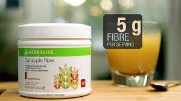
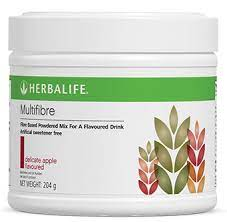
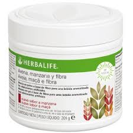

multifibre
5 g of fibre per serving,
6 fibre sources,
No added sugar,
Artificial sweetener free,
Contains both soluble and insoluble fibre.
Enjoy with water or mixed with your favourite Formula 1 shake
When made up with 150 ml of water



DESCRIPTION
Multifibre is a delicious and easy way to help increase your daily fibre intake.
A unique blend of soluble and insoluble fibres. Oat Apple Fibre Drink contains six fibre sources – apple, oat, maize, citrus, chicory and soya.
Each serving contains 5g of fibre and 15 calories.
PRICE: R275
STOCK AVAILIBILITY: 250 Products
PRODUCT SIZE:204g
PACKAGE TYPE: Box